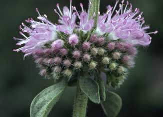

For 35 years, the writers and readers of Mother Earth News have shared hundreds of ways to use herbs to make life more enjoyable. In our archived articles, European and American pennyroyal (Mentha pulegium and Hedeoma pulegiodes) have been recommended as a way to deter fleas, as a vapor to relieve nasal congestion caused by colds, and as an infusion to cleanse the body of toxins.
We stand by using the pennyroyal plant to deter pests, but new information on the active ingredient in both species of pennyroyal, pulegone, merits a recall of taking pennyroyal into your body. In 1996, two California infants died after being given mint tea, in which the mint turned out to be pennyroyal. Most other pennyroyal incidents involve the use of pennyroyal essential oil (generally used for therapeutic or homeopathic purposes or as an insect repellent), which is so potent that it should be considered a poison. In the interest of safety, never use pennyroyal essential oil for anything, not ever.
Two thousand years ago, pennyroyal was the herb used to terminate unwanted pregnancies. Dr. Art Tucker, research professor at Delaware State University and author of The Big Book of Herbs, says that pennyroyal induces abortions by first damaging the mother's liver. Death sometimes follows. In a well-documented case from 1994, a college student who drank only 2 teaspoons of pennyroyal oil in teas over a two-day period died from it. In 1992, a healthy dog died after licking a similar amount from its fur.
Obviously, there are good reasons to leave pennyroyal oil alone. However, the pennyroyal plant itself, as the most pungent member of the mint family, may have several good uses around your house.
As a flea deterrent. Dried pennyroyal leaves can be scattered around pets' bedding area, and you can roll up some fresh stems in you dog's bandana before you go tromping through the woods. Pennyroyal oil used in flea collars has largely been phased out because it caused miscarriages in cats, so only use the fresh leafy stuff, please. If a pet or person could be expecting, don't use pennyroyal at all.
As a pest repellent. Crushed pennyroyal stems stuck in your hat and pockets really will repel gnats and mosquitoes. Dog owners often see their dogs rolling in pennyroyal patches, and dog instincts can usually be trusted.
In the garden. We've heard from folks who have successfully kept flea beetles off of eggplant by underplanting the eggplant with pennyroyal, and it may be of use as a companion plant to other pest-prone crops, too. If you have worked with pennyroyal as a companion crop, please share your experiences in the comments section below. Should you decide to try intercropping with pennyroyal, be aware that pennyroyal can be invasive, though it's not as thuggish as other mints.
|
 WIL MEINDERTS/FOTONATURA.COM When properly used, the leaves of the pennyroyal plant (Mentha pulegium) can safely deter fleas and insects. |
|
|